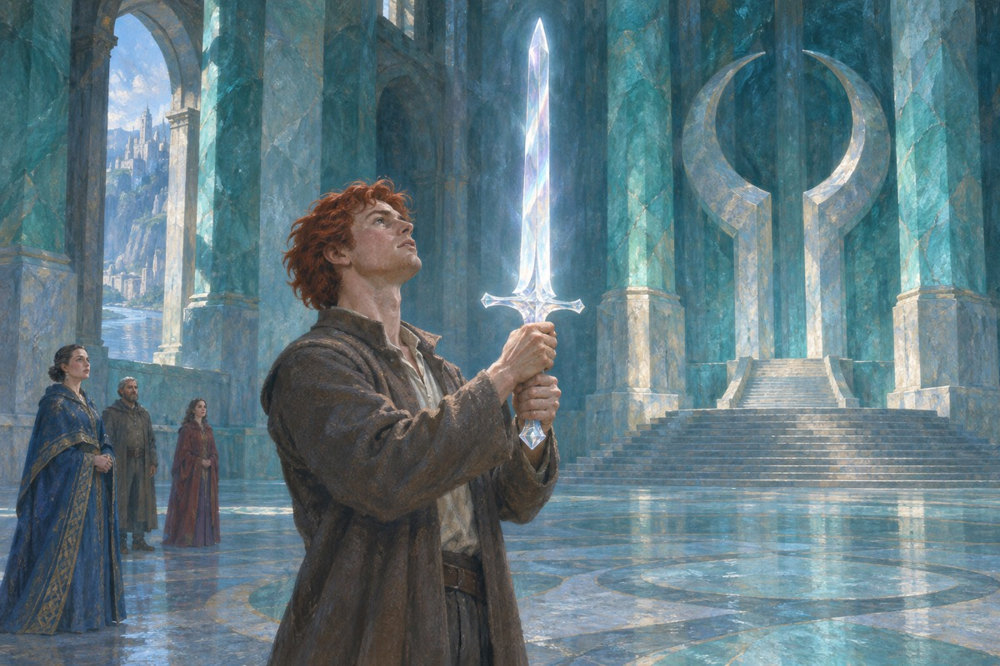
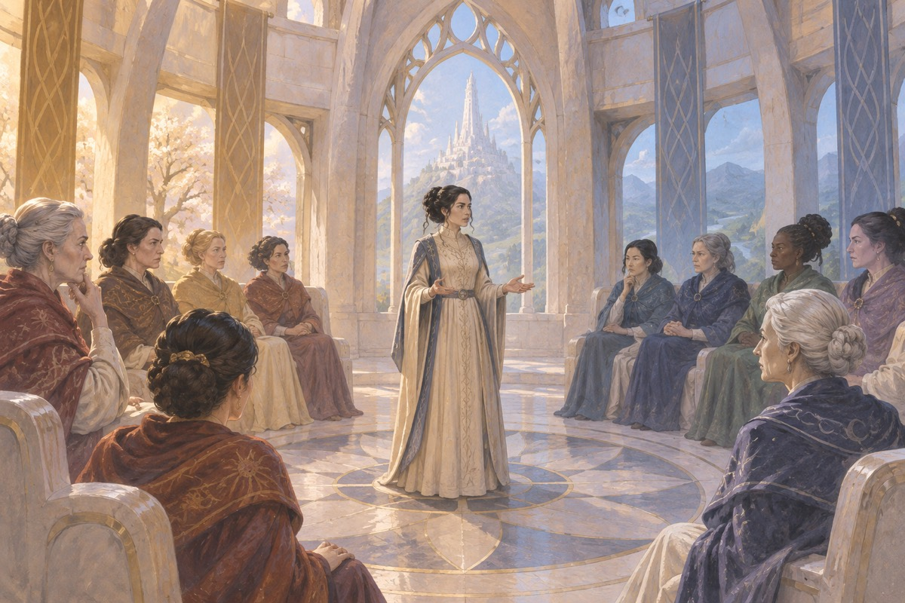
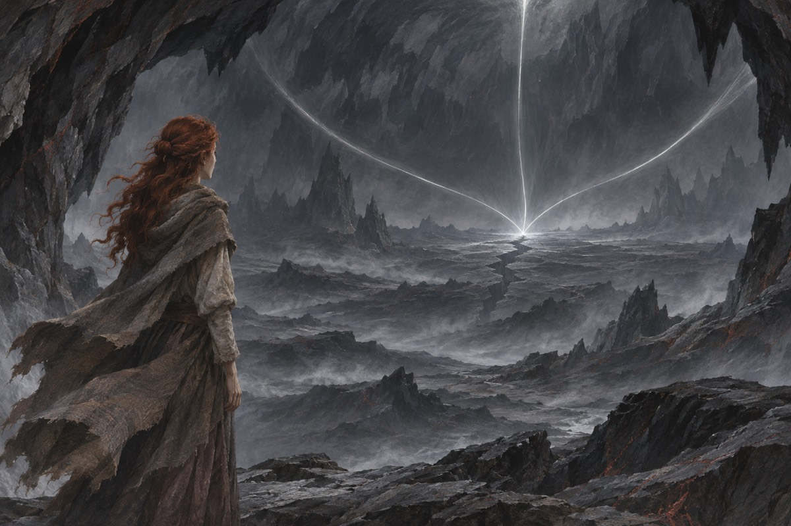

沐瑞和岚抵达两河
临近春庆时，两仪师沐瑞与护法岚来到两河。兰德等人注意到村外出现黑衣骑士。对外来者很少过问的村庄，正成为暗影寻找转生真龙的一处目标。
出处 · 第1卷《世界之眼》第1–3章

兽魔人袭击两河
春庆前夕，兽魔人袭击村庄和两河附近的农舍。沐瑞和岚协助抵御袭击，兰德一家也遭到突袭。沐瑞认定暗影正在找兰德、麦特和佩林，带三人离开；艾雯也和他们同行。
出处 · 第1卷《世界之眼》第5–10章
沐瑞与她的护法
岚是沐瑞的护法，也是失落王国马吉尔的继承人。离开两河后，他协助一行人躲避暗影，并指点带着苍鹭剑的兰德如何使剑。两人之间的联系随着旅程逐渐建立。
出处 · 第1卷《世界之眼》出走段落；第2卷《大猎捕》开篇
至上力的两半
阴极力与阳极力属于同一力量的两半。自暗帝污染阳极力之后，能够引导这一半的人面临疯狂的危险；白塔的两仪师训练引导阴极力的女性，并设法截断具有引导能力的男性。艾雯在追随沐瑞离开两河之后开始了解自己的能力。
出处 · 第1卷《世界之眼》序章、沐瑞教导艾雯的段落
世界之眼中的纯净阳极力
沐瑞一行来到世界之眼，遇见守护它的绿人。被遗弃者也找到这里，兰德在危急中动用了世界之眼储存的阳极力。他逐渐意识到自己与古老预言有关，同行者还在耗尽的力量池中发现了重要遗物。
出处 · 第1卷《世界之眼》第49–53章
兰德取得卡兰多
兰德来到提尔之石，拔出预言所说的剑中之剑卡兰多，并以它迎战巴阿扎蒙。对提尔与其他国家而言，这件事让转生真龙的出现成为无法回避的政治和军事事实。
出处 · 第3卷《转生真龙》第55–56章

兰德从茹迪恩归来
兰德深入艾伊尔荒漠，在茹迪恩看到关于艾伊尔先祖的记忆，并在双臂留下龙形印记。这些印记支持了他的身份主张，祖先的过往却动摇了许多人对本族历史的理解。
出处 · 第4卷《暗影渐起》第24–26章及其后
佩林为两河而战
佩林回到两河，面对家人的死亡和兽魔人的袭击。他组织乡亲自卫，与菲儿结婚，在战后获得两河居民的拥戴。他与狼之间的联系，也使他能用旁人难以理解的方式追踪危险。
出处 · 第4卷《暗影渐起》两河线
麦特获得旧日战场的记忆
麦特在沙达洛戈斯带走一把匕首，受到诅咒，后来由两仪师医治。他在茹迪恩进入异域，又得到此前不属于自己的许多记忆。这些旧日征战的经验在后来指挥军队时发挥作用。
出处 · 第1卷《世界之眼》第19章；第3卷《转生真龙》第18章；第4卷《暗影渐起》第24–26章
杜迈井之战
一群两仪师绑架兰德，把他关在箱子里押往白塔。佩林召集援军追上队伍，能引导阳极力的黑塔成员也来到战场，在兰德从箱中脱困后投入战斗。兰德与白塔、黑塔之间的权力关系由此改变。
出处 · 第6卷《混沌之王》第51–55章
兰德与奈妮薇净化阳极力
兰德与奈妮薇共同引导至上力，把阳极力上的污染引向沙达洛戈斯的邪恶，使两者相消。被遗弃者前来阻挠，同行者在外围抵挡。阳极力得以净化，男性引导者此后不再因这种污染而发疯。
出处 · 第9卷《寒冬之心》第35章〈奇迹之时〉
白塔分裂与重聚
艾莱达一派罢黜玉座苏安，白塔随之分裂。出走的两仪师另立艾雯为玉座。艾雯后来被白塔一方俘获，在塔中逐步争取支持，并在霄辰入侵等事件后成为重新统一的白塔的玉座。
出处 · 第4卷《暗影渐起》第47章；第6卷《混沌之王》第35章；第12卷《末日风暴》白塔线

龙山上的选择
屡次失去同伴后，兰德越来越习惯借力量逼迫别人服从。来到龙山时，他一度想毁掉自己所承担的一切。他重新想到，生命会随时光之轮轮回，也就仍有修正旧日错误的机会，最终放下毁灭的念头。
出处 · 第12卷《末日风暴》第50章〈黄金之脉〉
暗帝展示可能的世界
最后之战中，兰德在沙约古尔一次次看到暗帝可能造出的世界，也试着设想一个彻底消灭暗帝的世界。这些想象使他重新理解自由选择与抗争的意义，并决定采用封印的办法结束对峙。
出处 · 第14卷《光明回忆》沙约古尔段落
艾雯在最后之战中牺牲
艾雯在战场上施展反制烈火的编织，阻止被烈火撕裂的织锦继续崩解。她击败了受暗影驱使的马兹瑞姆·泰姆，也在这一战中耗尽力量而死。
出处 · 第14卷《光明回忆》第37章〈最后之战〉
在沙约古尔重新封印暗帝
兰德在沙约古尔与暗帝对峙。沐瑞和奈妮薇同他结成连环，利用剑中之剑卡兰多的弱点控制莫瑞丁，并借此取得真力。兰德以阳极力、阴极力与真力重造封印，把暗帝隔绝于世界之外。
出处 · 第14卷《光明回忆》第47–49章

兰德离开葬礼
大战结束后，众人为兰德原来的身体举行葬礼，兰德的意识却在莫瑞丁的身体里醒来。他离开营地，发现自己已无法调用昔日的力量。当他想让烟斗点燃时，烟斗随即着火。尾声留在兰德活下来并开始选择自己去向的这一刻。
出处 · 第14卷《光明回忆》尾声〈看见答案〉